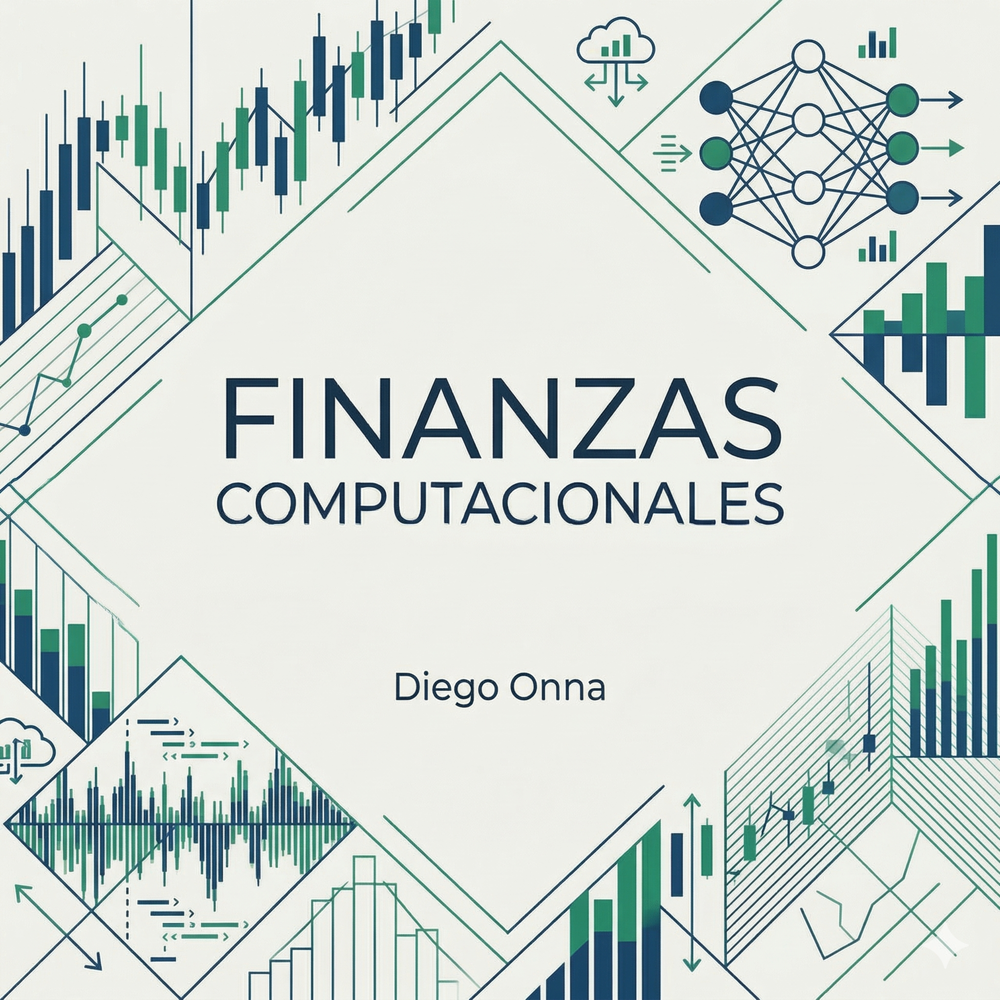

Finanzas Computacionales
De los Fundamentos a los Derivados: Un Enfoque Práctico
![]()

1 Bienvenida
Este es el sitio web del libro “Finanzas Computacionales con Python”, desarrollado por la Cátedra de Finanzas Computacionales de la Universidad Argentina de la Empresa (UADE).
La idea que organiza todo el libro es simple: las finanzas cuantitativas se aprenden construyendo. Acá no vas a encontrar fórmulas para memorizar, sino problemas reales —valuar un bono, armar un portafolio, medir un riesgo, cubrir una opción— resueltos con código que podés ejecutar, romper y modificar. Cada concepto de programación aparece cuando un problema financiero lo necesita, y cada modelo financiero llega con su implementación completa y con una discusión honesta de sus límites.
1.1 Cómo leer este libro
El libro está pensado para leerse en orden: cada capítulo usa lo construido en los anteriores, y los cuatro módulos forman un arco que va de la primera variable de Python hasta los modelos de volatilidad estocástica. Los bloques de código son ejecutables — la mejor forma de estudiar es correrlos a medida que leés, ya sea en el propio navegador (los capítulos iniciales lo permiten), en Jupyter local o en Google Colab. Al final de cada capítulo vas a encontrar los errores comunes del tema (léelos: son los que vas a cometer) y ejercicios para consolidar.
1.2 Los cuatro módulos
1.2.1 Módulo 1: Fundamentos y Renta Fija (Capítulos 1–6)
Aprendés a programar desde cero, con problemas financieros como excusa y motor. El arco: variables y decisiones → estructuras y bucles → funciones → objetos → NumPy → Pandas, terminando con una librería de valuación de renta fija y la construcción de curvas de tasas hecha por vos.
- Pensamiento Computacional en Finanzas
- Iteraciones y Estructuras de Datos
- Funciones, Excepciones y Módulos
- Programación Orientada a Objetos (POO)
- NumPy y Cálculo Vectorizado
- Series de Tiempo con Pandas
1.2.2 Módulo 2: Teoría de Portafolios y Optimización (Capítulos 7–10)
La pregunta central de la inversión —¿cómo reparto el capital?— respondida en tres tiempos: el edificio clásico de Markowitz, sus fallas prácticas, y las dos respuestas modernas (HRP y Black-Litterman) que la industria usa para repararlas.
- Estadística Descriptiva y Optimización Matemática
- Teoría Moderna de Portafolios (Markowitz)
- Hierarchical Risk Parity (HRP)
- El Modelo de Black-Litterman
1.2.3 Módulo 3: Riesgo, Simulación y Econometría (Capítulos 11–17)
El oficio del análisis de riesgo completo: medir (VaR y Expected Shortfall), contextualizar (Basilea, stress testing y las lecciones de LTCM y 2008), simular (Monte Carlo y procesos con saltos), inferir (modelos lineales y series de tiempo) y validar (backtesting con walk-forward). El módulo donde se aprende a desconfiar de los modelos con método.
- Valor en Riesgo (VaR) y Expected Shortfall
- Riesgo y Regulación
- Simulación de Monte Carlo
- Procesos Estocásticos del Precio de un Activo
- Econometría y Modelos Lineales
- Series Temporales — ARIMA y VAR
- Backtesting de Estrategias
1.2.4 Módulo 4: Derivados y Volatilidad (Capítulos 18–20)
El examen integrador: los derivados usan todo el libro a la vez. Black-Scholes y la volatilidad implícita, la réplica puesta en práctica con delta hedging, y los modelos de volatilidad estocástica (Heston, SABR) que capturan lo que la sonrisa de volatilidad venía señalando.
- Valuación de Opciones y Volatilidad Implícita
- Gestión de Coberturas Dinámicas (Delta Hedging)
- Modelos de Volatilidad Estocástica
1.3 ¿A quién va dirigido?
Este libro está diseñado para estudiantes de finanzas, economía y profesionales del sector que deseen transicionar hacia un enfoque más cuantitativo y computacional. No se requiere experiencia previa en programación, ya que empezamos desde los fundamentos.
1.4 Convenciones
- Los bloques de código son totalmente ejecutables.
- Las fórmulas se presentan en LaTeX para mayor claridad.
- Usamos callouts para resaltar tips, advertencias y conceptos clave.
Recomendamos seguir el libro de forma secuencial, ejecutando los ejemplos dentro del libro, en un entorno local o en Google Colab. En el apéndice encontrás la guía para poner a punto tu entorno.
Este sitio es y será siempre gratuito. Si encontrás algún error o tenés alguna sugerencia, podés abrir un issue en nuestro repositorio de GitHub. En el caso que quieras contribuir o sugerir cambios al libro, no dudes en contactarnos.